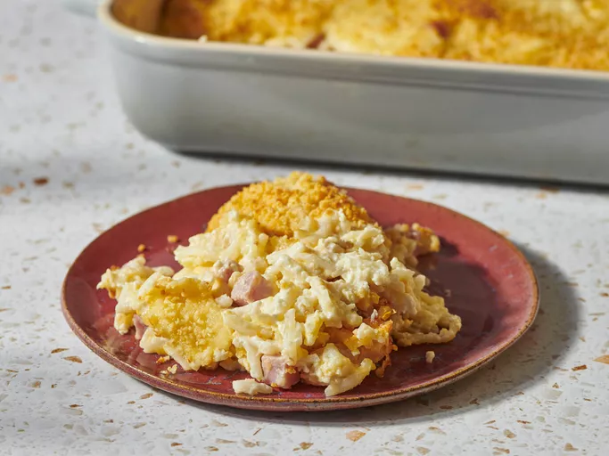

Home
Cheesy Ham and Hash Brown Casserole

Delicious Cheesy Ham and Hash Brown
This ham and hash brown casserole is quick and easy to make,
not to mention delicious! I mostly serve this
as a breakfast casserole, but it's great anytime!
Ingredients
- cooking spray
- 1 (32 ounce) package frozen hash brown potatoes
- 2 (10.5 ounce) cans condensed cream of potato soup
- 1 (16 ounce) container sour cream
- 2 cups shredded sharp Cheddar cheese
- 8 ounces cooked, diced ham
- 1 ½ cups grated Parmesan cheese
Steps
- Gather all ingredients. Preheat the oven to 375 degrees F (190 degrees C). Lightly grease a 9x13-inch baking dish with cooking spray.
- Mix together hash browns, condensed soup, sour cream, Cheddar cheese, and ham in a bowl until well combined.
- Spread evenly into the prepared dish. Sprinkle with Parmesan cheese.
- Bake in the preheated oven until bubbly and lightly brown, about 1 hour.
- Enjoy!